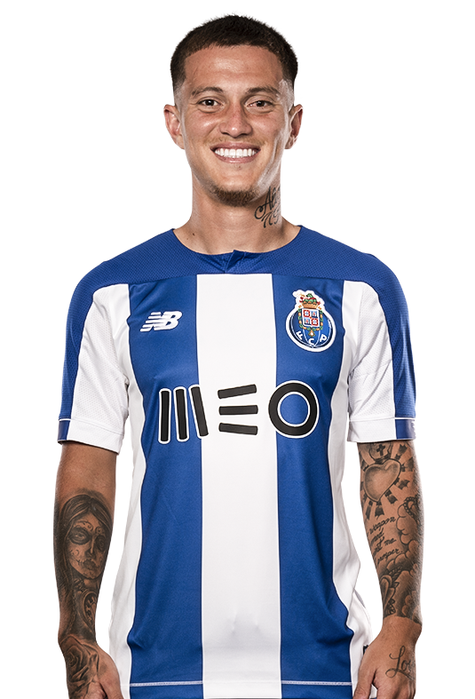
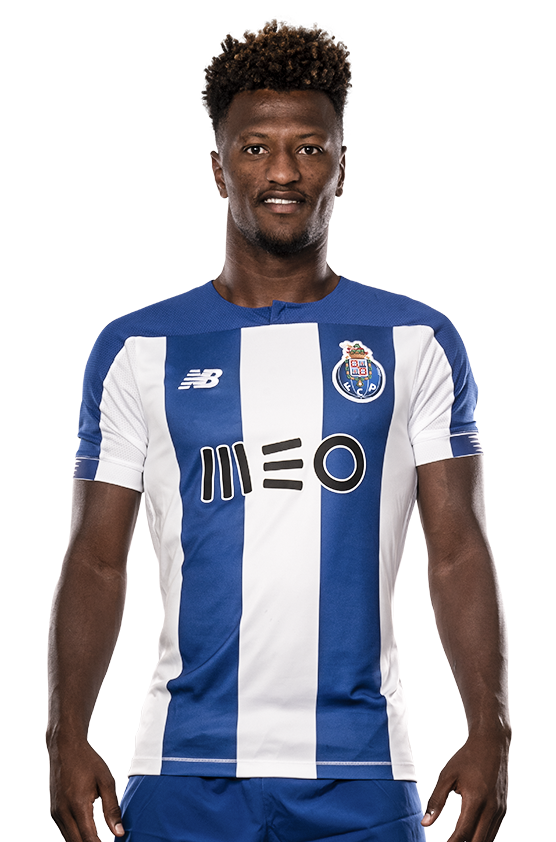
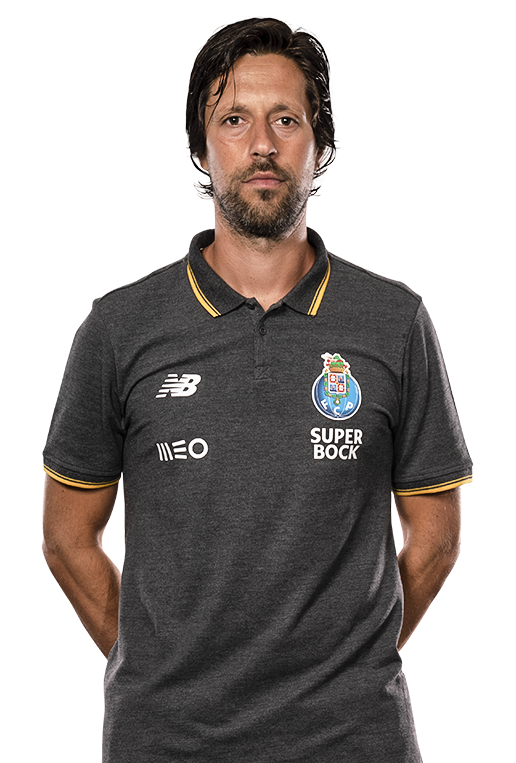

Plantel do Futebol Clube do Porto
01 - Iker Casillas
Guarda-Redes
Nacionalidade: Espanhola
Data de Nascimento: 20/05/1981
Idade:39
31 - Diogo Costa
Guarda-Redes
Nacionalidade: Portuguesa
Data de Nascimento: 19/09/1999
Idade: 21



Vítor Bruno
TREINADOR-ADJUNTO
Nacionalidade: Portuguesa
Data de Nascimento: 02/12/1982
Idade: 37
Siramana Dembelé
TREINADOR-ADJUNTO
Nacionalidade: Francesa
Data de Nascimento: 27/01/1997
Idade: 42
Diamantino Figueiredo
Treinador de Guarda-Redes
Nacionalidade: Portuguesa
Data de Nascimento: 08/04/1960
Idade: 59
Eduardo Oliveira
Fisiologista
Nacionalidade: Portuguesa
Data de Nascimento: 29/09/1977
Idade: 42